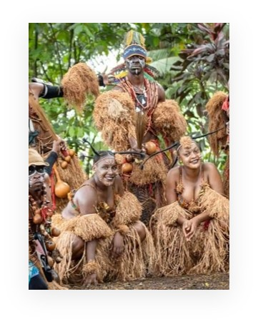
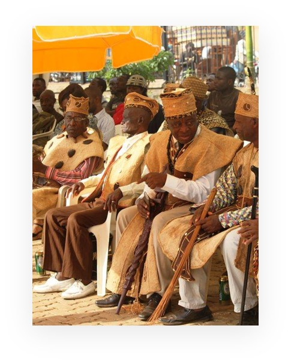
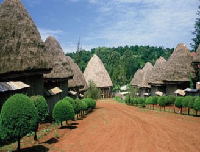
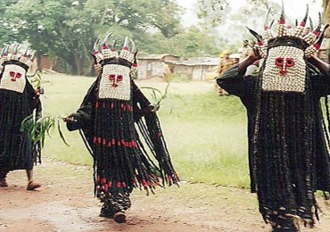
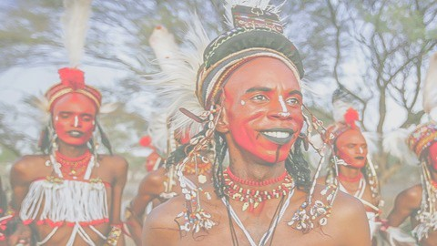
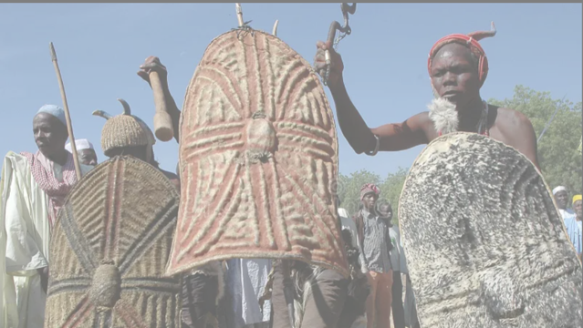
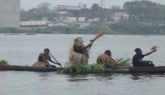
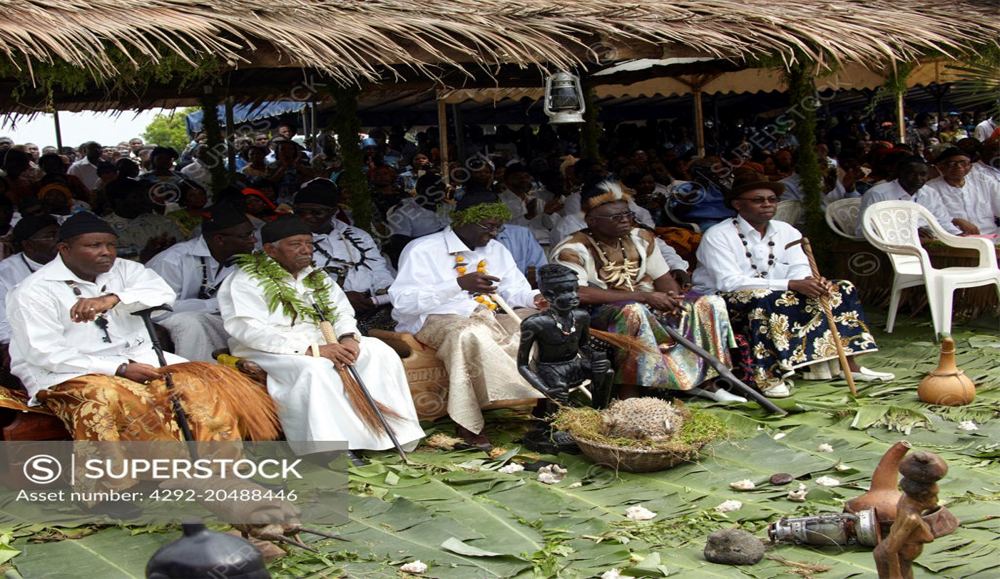

The Four Major Cultural Groups In Cameroon
Fang-Beti in The South
 The Fang-Beti,also called Beti-Pahuin—are a large Bantu-speaking ethnic group found mainly in Cameroon, Equatorial Guinea, and Gabon. In Cameroon, they are concentrated in the Centre, South, and East regions. The group is made up of closely related sub-groups such as the Beti, Bulu, Eton, Ewondo, and Fang, who share linguistic, cultural, and historical ties. Their language cluster belongs to the Bantu family, and dialects like Ewondo and Bulu are widely spoken and used as local lingua francas.
Historically, the Fang-Beti migrated from northern or savannah regions to the southern forest zones, possibly around the 17th century, settling in more fertile areas. They developed strong clan-based social structures, with patrilineal lineage systems and village life centered around family and community leadership. Traditional beliefs focused on ancestor worship, spiritual forces, and rituals,though many Fang-Beti today practice Christianity, often blended with indigenous customs.
Culturally, the Fang-Beti are known for their wood carvings, masks, and rich oral traditions, including proverbs, storytelling, and music. Some masks, like the "Ngil" mask among the Fang, were used in secret societies for justice and initiation. Politically, the Fang-Beti—especially the Beti and Bulu—have had significant influence in modern Cameroonian politics, with several leaders, including President Paul Biya, coming from this group. Today, they continue to play a vital role in the country's cultural and political life, while also working to preserve and promote their heritage through festivals and education.
Grass-Field in The west
 The Grassfields region—also known as the Western Highlands or Bamenda Grassfields—is a mountainous, fertile area in western Cameroon. It is home to numerous related ethnic groups, including the Bamileke, Bamum, Tikar, Nso, Kom, Bafut, Babungo, Bali-Nyonga, and others. Archaeological evidence shows that people have inhabited the area for thousands of years, transitioning from hunter-gatherer societies to settled farming communities. Many of the groups trace their origins to ancient migrations, especially from the north and central parts of Cameroon.
Politically, Grassfields societies are traditionally organized into fondoms or chiefdoms, each ruled by a fon (king or traditional ruler). These leaders are supported by councils of nobles and elders and are often seen as both political and spiritual heads. Lineage and ancestry are central to their identity, with many communities claiming descent from common ancestors, especially in relation to the Tikar origin theory, which suggests that many Grassfields groups migrated from the Tikar Plain in central Cameroon.
The region is known for its linguistic diversity, with dozens of local languages spoken across different fondoms. These languages belong to the Grassfields Bantu group of the Niger-Congo language family. Most people in the area speak multiple languages due to close contact between neighboring communities. Economically, the Grassfields people are mostly farmers, growing crops like yams, maize, cassava, plantains, and groundnuts, as well as engaging in small-scale animal husbandry.
Art and culture are vital parts of life in the Grassfields. The royal palaces (or “Grande Cases”) of the fondoms are important cultural and spiritual centers, often decorated with wooden carvings, beaded items, and sacred objects. The people are well known for their masks, dance traditions, ritual ceremonies, and festivals, which often honor ancestors or mark key events such as funerals, royal succession, or community celebrations. These artistic expressions are deeply tied to their belief systems and social structure.
In modern times, Grassfields societies have adapted to colonial and post-independence changes. Many fondoms continue to exist and hold significant influence, particularly in customary law, land issues, and cultural preservation. The people have also become increasingly integrated into national political and economic life, with many from the region migrating to cities for education, work, and trade. Despite these changes, efforts are ongoing to preserve local languages, traditions, and identities in the face of modernization and globalization.
We invite you to take some time to experience the rich traditions of the Grassfield Cultural Festival. It offers a unique opportunity to witness the vibrant heritage, music, dance, and craftsmanship of the region.
- Bamileke tradional dance kougang
- Annual festival Nsem Todjom
- Annual festival Nguon
- Annual festival Nyan Nyan
Sudano-Sahelian in The North
 The Sudano-Sahelian cultural group is found primarily in the northern regions of Cameroon, including the Adamawa, North, and Far North regions. This group lives in the Sudano-Sahelian ecological zone, characterized by savannah grasslands, dry climates, and seasonal rainfall. The people in this region are highly diverse, both ethnically and linguistically, and include major groups such as the Fulani (or Peul), Massa, Tupuri, Mafa, Mandara, Musgum, Kotoko, and many others.
The Fulani are the largest and most influential group in this area. Originally nomadic pastoralists, many Fulani in Cameroon have settled and are involved in cattle rearing and trade. Their Islamic faith strongly influences their culture, law, education, and social systems. Traditional leaders among the Fulani are known as lamidos, who rule over lamidats (chiefdoms) with both religious and political authority, especially in towns like Garoua, Ngaoundéré, and Maroua.
Other ethnic groups in the Sudano-Sahelian zone have distinct traditions, languages, and livelihoods. Many communities are involved in agriculture, growing crops such as millet, sorghum, cotton, and groundnuts, while also engaging in fishing, animal husbandry, and local crafts. Traditional housing in the region often includes round huts made of sun-dried mud and thatched or domed roofs, adapted to the hot and dry environment.
The region has a rich cultural heritage, with unique music, dances, and art. Groups like the Musgum are known for their distinctive clay architecture, including conical dwellings shaped like beehives. Many groups maintain vibrant traditional festivals, rituals, and oral traditions. Islam is the dominant religion, especially among the Fulani and Kotoko, but indigenous beliefs still coexist or influence local practices.
Today, the Sudano-Sahelian zone plays an important role in Cameroon's cultural, religious, and economic life. However, it faces challenges such as climate change, desertification, and insecurity, particularly from the presence of Boko Haram in parts of the Far North. Despite these issues, the people of this region continue to preserve their rich cultural identity while contributing to the nation's diversity.
Coastal (Sawa) Region
 The Coastal group, also known as the Sawa people, live mainly along the Atlantic coast of Cameroon, particularly in the Littoral, Southwest, and parts of the South regions. The term “Sawa” (meaning “coast” in Duala) refers to a collection of ethnic groups who share historical and cultural traits linked to their geographic location along the coast. Major Sawa communities include the Duala, Bakweri, Bakoko, Basaa, Batanga, Malimba, and Isubu, among others.
Historically, the Sawa were among the first Cameroonian groups to come into contact with European traders, beginning with the Portuguese in the 15th century. These coastal communities served as middlemen in trade between Europeans and the interior regions, dealing in goods such as ivory, palm oil, and later slaves. Over time, this contact led to the rise of influential coastal kingdoms, such as the Duala Kingdom and the Bimbia Kingdom, which developed strong political and economic structures under local rulers known as kings or chiefs.
Culturally, the Sawa people have rich traditions that blend African and European influences. Chieftaincy institutions are still respected today, with royal families playing ceremonial and cultural roles in society. One of the most important cultural events is the Ngondo Festival , an annual water-centered ceremony held by the Duala people to honor the spirits of the ancestors and connect with the sea. The festival features boat races, traditional dances, rituals, and displays of cultural pride.
Most Sawa communities practice Christianity, especially due to early missionary influence during the colonial period, but traditional beliefs and customs remain important in social life. The Sawa are also known for their vibrant music, dance, and clothing, with rhythms like Makossa and Assiko originating in the coastal areas. Fishing and trade remain key parts of their economy, along with farming and urban professions in cities like Douala, Cameroon's largest city and economic capital.
Today, the Coastal group continues to play a significant role in Cameroon's political, economic, and cultural landscape. Despite facing challenges such as urban expansion, environmental degradation, and cultural erosion, the Sawa people actively work to preserve their heritage through festivals, education, and cultural associations.